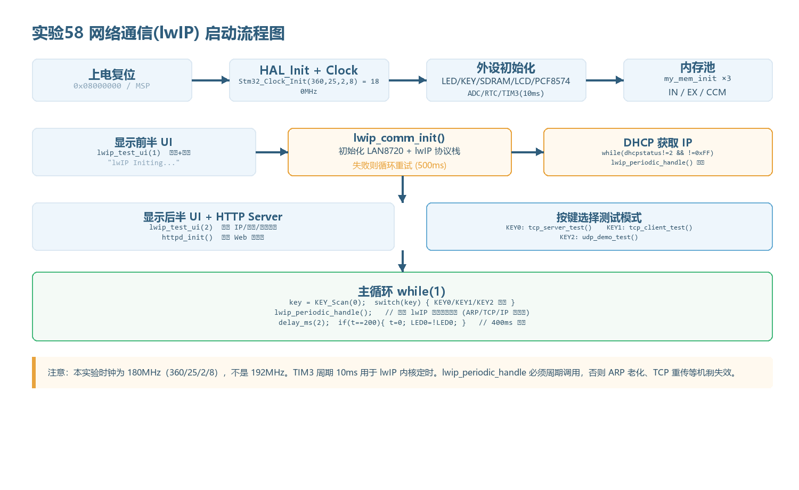
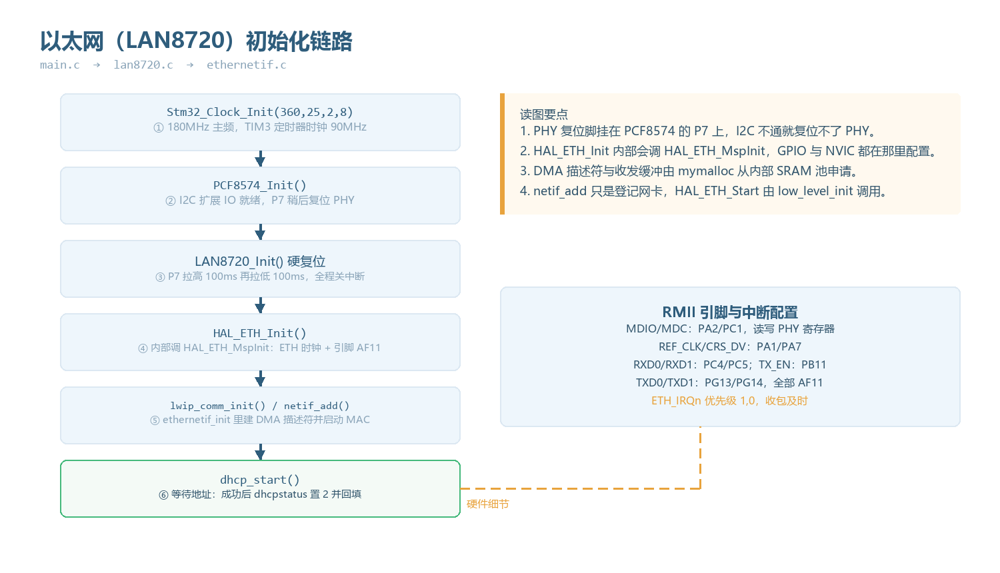
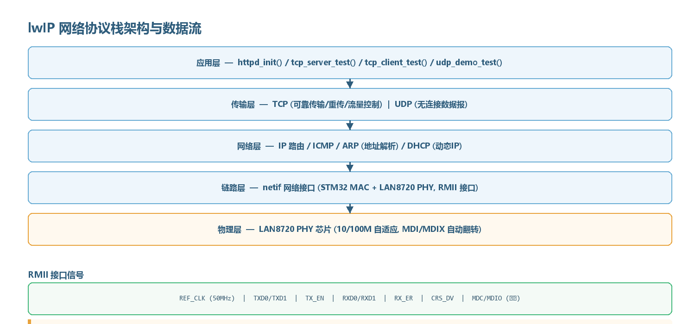
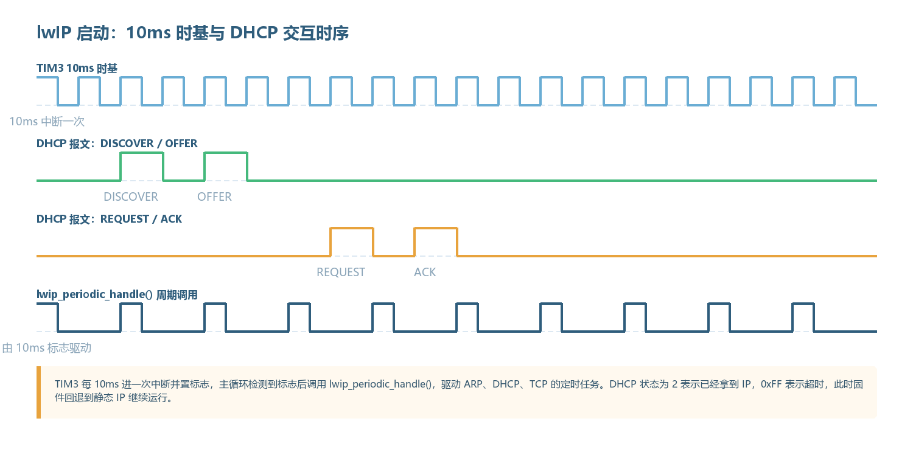
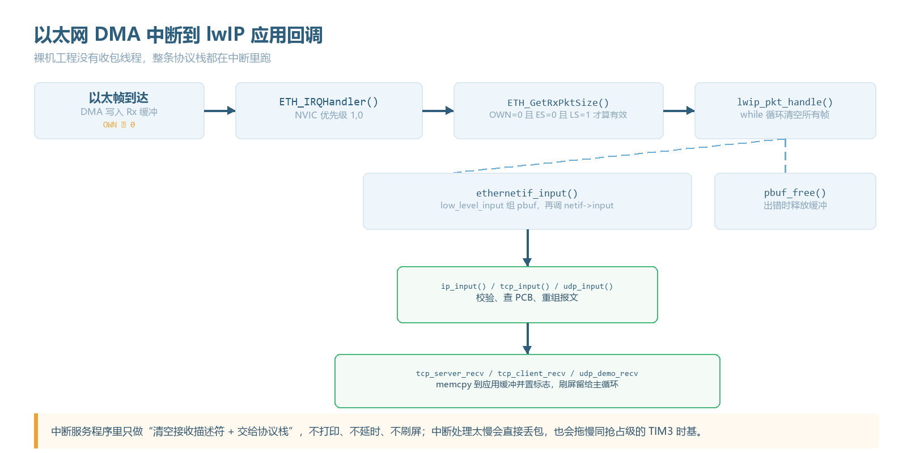

01 实验目标与硬件资源
STM32F429 内置 MAC + 外置 LAN8720 PHY，跑 lwIP 1.4.1，做 TCP 服务器/客户端与 UDP 收发
本实验把开发板接入以太网：STM32F429 的 MAC 通过 RMII 接口连接 LAN8720 PHY，PHY 再经网络变压器接到 RJ45。协议栈使用 lwIP 1.4.1 的裸机移植版（无操作系统），主循环里轮询 lwip_periodic_handle() 驱动定时任务。
启动阶段的任务顺序与前面实验不同：时钟降到 180MHz（Stm32_Clock_Init(360,25,2,8)），并额外初始化 TIM3 产生 10ms 时基、ADC、RTC 和三个内存池。lwIP 本身不用 RTOS，但需要“毫秒时间”来算 ARP 老化、TCP 重传与 DHCP 超时，这个时间就来自 TIM3 中断累加的 lwip_localtime。
| 对比项 | 实验58 网络通信（本页） | 实验57 USB 鼠标键盘 | 实验55 虚拟串口 |
|---|---|---|---|
| 外设 | ETH MAC + LAN8720（RMII） | OTG_FS Host + HID | OTG_FS Device + CDC |
| 主频 | 180MHz（360/25/2/8） | 192MHz（384/25/2/8） | 192MHz |
| 时基 | TIM3 10ms → lwip_localtime | USB 帧计数 | USB 帧计数 |
| 数据触发 | ETH DMA 接收中断 | OTG_FS 中断 | OTG_FS 中断 |
| 协议栈 | lwIP 1.4.1 + FATFS 无关 | USB Host 库 | USB Device 库 |
引脚与板级资源
| 资源 | 引脚 / 参数 | 说明 |
|---|---|---|
| ETH_MDIO / MDC | PA2 / PC1，AF11 | 读写 PHY 寄存器（SMI 管理接口） |
| RMII_REF_CLK | PA1 | 50MHz 参考时钟，由 PHY 或外部晶振提供 |
| RMII_CRS_DV | PA7 | 载波侦听 / 接收数据有效 |
| RMII_RXD0 / RXD1 | PC4 / PC5 | 接收数据 |
| RMII_TX_EN | PB11 | 发送使能 |
| RMII_TXD0 / TXD1 | PG13 / PG14 | 发送数据 |
| PHY 复位 | PCF8574 P7（ETH_RESET_IO=7） | I2C 扩展 IO，软件拉高 100ms 再拉低 |
| 按键 | KEY0 / KEY1 / KEY2 / WK_UP | 分别进入 TCP Server / TCP Client / UDP / 退出 |
| 时基 | TIM3，10ms | 累加 lwip_localtime，供协议栈超时判断 |
180MHz 主频
RMII + LAN8720
lwIP 1.4.1 裸机
DHCP 自动获取 IP
TCP Server / Client
UDP + WebServer
LAN8720 的复位脚没有直接接 GPIO，而是挂在 PCF8574 的 P7 上。也就是说：I2C 没通，PHY 就复位不了，链路永远起不来。排查网络问题第一步应确认
PCF8574_Init() 是否成功、P7 是否真的翻转。02 目录与文件分工
HARDWARE 管 PHY 与定时器，LWIP 分成“内核 / 移植层 / 应用层”三块
| 文件 | 职责 | 本页关注点 |
|---|---|---|
USER/main.c | 初始化、lwip_comm_init、DHCP 等待、主循环 | lwip_test_ui、按键分派 |
HARDWARE/LAN8720/lan8720.c | PHY 复位、HAL_ETH_Init、DMA 中断 | ETH_IRQHandler、LAN8720_Init |
HARDWARE/TIMER/timer.c | TIM3 10ms 中断 | lwip_localtime += 10 |
LWIP/arch/sys_arch.c | 裸机“系统层” | 空实现，屏蔽 OS 依赖 |
LWIP/lwip-1.4.1/src/netif/ethernetif.c | 网卡驱动适配层 | low_level_input/output |
LWIP/lwip_app/lwip_comm/lwip_comm.c | 协议栈启动与周期任务 | lwip_comm_init、DHCP 状态机 |
lwip_app/tcp_server_demo | TCP 服务器 | tcp_accept/recv/sent/poll |
lwip_app/tcp_client_demo | TCP 客户端 | tcp_connect 与断线重连 |
lwip_app/udp_demo | UDP 收发 | udp_recv 回调 |
lwip_app/web_server_demo | HTTP 服务器 | httpd_init()、fsdata |
CORE/startup_stm32f429xx.s | 栈堆、向量表 | ETH_IRQHandler 弱符号 |
读代码顺序建议：
main（谁先谁后）→ LAN8720_Init（MAC/PHY 怎么起）→ lwip_comm_init（netif 怎么挂）→ ethernetif.c（收发怎么走 DMA）→ ETH_IRQHandler（数据怎么进协议栈）→ 三个 demo（回调怎么注册）。03 启动流程总览
上电到能收发报文共五段：基础外设 → 内存池 → PHY 与协议栈 → DHCP → 应用

int main(void)
{
u8 t;
u8 key;
HAL_Init(); // 初始化HAL库
Stm32_Clock_Init(360,25,2,8); // 设置时钟,180Mhz（不是192M！）
delay_init(180); // 初始化延时函数
uart_init(115200); // 初始化USART
LED_Init(); // 初始化LED
KEY_Init(); // 初始化按键
SDRAM_Init(); // 初始化SDRAM
LCD_Init(); // 初始化LCD
PCF8574_Init(); // 初始化PCF8574（P7 复位 PHY）
MY_ADC_Init(); // 初始化ADC
RTC_Init(); // 初始化RTC
TIM3_Init(1000-1,900-1); // 10ms 时基：90M/900=100K，1000 计数=10ms
my_mem_init(SRAMIN); // 内部内存池
my_mem_init(SRAMEX); // 外部内存池
my_mem_init(SRAMCCM); // CCM 内存池
POINT_COLOR=RED;
LED0=0;
lwip_test_ui(1); // 加载前半部分 UI
LCD_ShowString(30,110,200,16,16,"lwIP Initing...");
while(lwip_comm_init()) // 失败就重试，不往下走
{
LCD_ShowString(30,110,200,20,16,"LWIP Init Falied! ");
delay_ms(500);
LCD_ShowString(30,110,200,16,16,"Retrying... ");
delay_ms(500);
}
LCD_ShowString(30,110,200,20,16,"LWIP Init Success!");
LCD_ShowString(30,130,200,16,16,"DHCP IP configing...");
#if LWIP_DHCP
while((lwipdev.dhcpstatus!=2)&&(lwipdev.dhcpstatus!=0XFF))// 等成功或超时
{
lwip_periodic_handle(); // 内核需要定时驱动
}
#endif
lwip_test_ui(2); // 加载后半部分 UI（显示 IP/速率）
httpd_init(); // HTTP 服务器
while(1)
{
key=KEY_Scan(0);
switch(key)
{
case KEY0_PRES: tcp_server_test(); lwip_test_ui(3); break;
case KEY1_PRES: tcp_client_test(); lwip_test_ui(3); break;
case KEY2_PRES: udp_demo_test(); lwip_test_ui(3); break;
}
lwip_periodic_handle(); // ARP 老化 / TCP 重传 / DHCP 计时
delay_ms(2);
t++;
if(t==100)LCD_ShowString(30,230,200,16,16,"Please choose a mode!");
if(t==200){ t=0; LED0=!LED0; }// 心跳灯
}
}
关键逻辑说明
- 180MHz 而不是 192MHz：本工程用
(360,25,2,8)，SYSCLK=180MHz，PLLQ=8 仍给出 48MHz 无关项；delay_init(180)必须跟着改，否则延时全部偏长。 - TIM3 必须在协议栈之前启动：
lwip_localtime靠在 TIM3 回调里累加，若在lwip_comm_init之后才开，会出现“时间为 0”导致 DHCP 计时异常。 - 三个内存池缺一不可：lwIP 的
memp_memory与ram_heap通过mymalloc(SRAMIN,...)申请，my_mem_init没调用就会分配失败，lwip_comm_init直接返回 2。 while(lwip_comm_init())是死等：PHY 没接网线也能初始化成功，但 LAN8720 自协商失败会返回 3；此时不会继续往下，LCD 一直显示 Retrying。- DHCP 等待期间必须喂内核：
lwip_periodic_handle()里跑dhcp_fine_tmr()，不调用的话 DHCP 报文永远不会重发，状态一直停在 1。 lwip_test_ui(3)是 bit0|bit1：从 demo 返回后前后两半 UI 都要重画，IP 与速率才不会被残留文字覆盖。
04 启动文件与向量表
栈 1KB、堆 512B；ETH 与 TIM3 的中断入口都在启动文件里以弱符号占位
Stack_Size EQU 0x400; ; 1KB 栈 AREA STACK, NOINIT, READWRITE, ALIGN=3 Stack_Mem SPACE Stack_Size __initial_sp ; 向量表第 0 项：初始 MSP Heap_Size EQU 0x200; ; 512B 堆 Reset_Handler PROC EXPORT Reset_Handler [WEAK] IMPORT SystemInit IMPORT __main LDR R0, =SystemInit BLX R0 ; SystemInit：FPU / RCC / VTOR LDR R0, =__main BX R0 ; C 库启动 → main ENDP DCD ETH_IRQHandler ; Ethernet EXPORT ETH_IRQHandler [WEAK] ; lan8720.c 里的强符号覆盖它 ETH_IRQHandler B . DCD TIM3_IRQHandler ; TIM3 EXPORT TIM3_IRQHandler [WEAK] ; timer.c 里的强符号覆盖它 TIM3_IRQHandler B .
关键逻辑说明
- lwIP 的静态内存不在栈上：
memp_memory、ram_heap、Rx_Buff、Tx_Buff全部由mymalloc从内部 SRAM 池里切出来，因此 1KB 栈够用；真正吃内存的是几十 KB 的协议栈缓冲。 - 中断嵌套深度要留余量：
ETH_IRQHandler里会调ethernetif_input、ip_input、tcp_input，调用链很深，栈主要被这条路径消耗。 - 弱符号占位是标准做法：启动文件只提供死循环，驱动里定义同名函数即可替换；反过来若忘记在工程里加入
lan8720.c，现象就是“一收包就卡死”。 - 向量表偏移未改：
SCB->VTOR = 0x08000000；若以后做 IAP 或从外部 SDRAM 启动，必须同步改偏移，否则中断会跳到旧固件。
05 SystemInit 与 HAL_Init
FPU、RCC 复位、分组 2、1ms 时基，与 USB 系列实验完全一致
void SystemInit(void)
{
#if (__FPU_PRESENT == 1) && (__FPU_USED == 1)
SCB->CPACR |= ((3UL << 10*2)|(3UL << 11*2));/* 放开 CP10/CP11 */
#endif
RCC->CR |= (uint32_t)0x00000001; /* HSI 开 */
RCC->CFGR = 0x00000000; /* 时钟源回 HSI */
RCC->CR &= (uint32_t)0xFEF6FFFF; /* 关 HSEON/CSSON/PLLON */
RCC->PLLCFGR = 0x24003010; /* PLL 复位值 */
RCC->CR &= (uint32_t)0xFFFBFFFF; /* 清 HSEBYP */
RCC->CIR = 0x00000000; /* 关 RCC 中断 */
SCB->VTOR = FLASH_BASE | VECT_TAB_OFFSET;
}
HAL_StatusTypeDef HAL_Init(void)
{
__HAL_FLASH_INSTRUCTION_CACHE_ENABLE();
__HAL_FLASH_DATA_CACHE_ENABLE();
__HAL_FLASH_PREFETCH_BUFFER_ENABLE();
HAL_NVIC_SetPriorityGrouping(NVIC_PRIORITYGROUP_2);// 2 位抢占 + 2 位子优先级
HAL_InitTick(TICK_INT_PRIORITY); // 0x0F，1ms
HAL_MspInit();
return HAL_OK;
}
关键逻辑说明
- Cache 打开后 DMA 描述符必须是普通内存：本工程把描述符放在内部 SRAM 且由
mymalloc分配，未使用带 cache 属性的区域；如果改到 SDRAM 并开 cache，收发前必须手动 clean/invalidate。 - 分组 2 决定了 ETH 的抢占关系：
ETH_IRQn配(1,0)、TIM3_IRQn配(1,1)，两者抢占级相同，ETH 子优先级更高，收包能先于时基处理。 - HAL 的 1ms 时基只服务 HAL：协议栈使用的是
lwip_localtime（TIM3 累加），两者互不相干，所以改HAL_InitTick不影响 lwIP 超时。
06 时钟树与 TIM3 时基
180MHz 主频，APB1 定时器时钟 90MHz；10ms 中断累加出协议栈的“毫秒时间”
void Stm32_Clock_Init(u32 plln,u32 pllm,u32 pllp,u32 pllq)
{
RCC_OscInitTypeDef RCC_OscInitStructure;
RCC_ClkInitTypeDef RCC_ClkInitStructure;
__HAL_RCC_PWR_CLK_ENABLE();
__HAL_PWR_VOLTAGESCALING_CONFIG(PWR_REGULATOR_VOLTAGE_SCALE1);// Scale1
RCC_OscInitStructure.OscillatorType=RCC_OSCILLATORTYPE_HSE;
RCC_OscInitStructure.HSEState=RCC_HSE_ON; // 25MHz 晶振
RCC_OscInitStructure.PLL.PLLState=RCC_PLL_ON;
RCC_OscInitStructure.PLL.PLLSource=RCC_PLLSOURCE_HSE;
RCC_OscInitStructure.PLL.PLLM=pllm; // 25 → 1MHz
RCC_OscInitStructure.PLL.PLLN=plln; // 360 → VCO 360MHz
RCC_OscInitStructure.PLL.PLLP=pllp; // /2 → 180MHz
RCC_OscInitStructure.PLL.PLLQ=pllq; // /8 → 45MHz（本实验不用 USB）
HAL_RCC_OscConfig(&RCC_OscInitStructure);
RCC_ClkInitStructure.ClockType=(RCC_CLOCKTYPE_SYSCLK|RCC_CLOCKTYPE_HCLK|RCC_CLOCKTYPE_PCLK1|RCC_CLOCKTYPE_PCLK2);
RCC_ClkInitStructure.SYSCLKSource=RCC_SYSCLKSOURCE_PLLCLK;
RCC_ClkInitStructure.AHBCLKDivider=RCC_SYSCLK_DIV1;
RCC_ClkInitStructure.APB1CLKDivider=RCC_HCLK_DIV4; // PCLK1=45MHz → TIM3 90MHz
RCC_ClkInitStructure.APB2CLKDivider=RCC_HCLK_DIV2; // PCLK2=90MHz
HAL_RCC_ClockConfig(&RCC_ClkInitStructure,FLASH_LATENCY_5);// 5WS
}
| 节点 | 算式 | 结果 | 本实验用途 |
|---|---|---|---|
| VCO | 25MHz/25 × 360 | 360MHz | P/P/Q 分频源 |
| SYSCLK | 360 / 2 | 180MHz | 内核、内存、ETH |
| PCLK1 | 180 / 4 | 45MHz | TIM3 计数时钟 90MHz |
| PCLK2 | 180 / 2 | 90MHz | USART1（115200） |
| TIM3 | 90MHz / 900 / 1000 | 10ms | lwip_localtime += 10 |
void TIM3_Init(u16 arr,u16 psc)
{
TIM3_Handler.Instance=TIM3;
TIM3_Handler.Init.Prescaler=psc; // 900-1 → 100kHz
TIM3_Handler.Init.CounterMode=TIM_COUNTERMODE_UP; // 向上计数
TIM3_Handler.Init.Period=arr; // 1000-1 → 10ms
TIM3_Handler.Init.ClockDivision=TIM_CLOCKDIVISION_DIV1;
HAL_TIM_Base_Init(&TIM3_Handler);
HAL_TIM_Base_Start_IT(&TIM3_Handler); // 开更新中断
}
void HAL_TIM_PeriodElapsedCallback(TIM_HandleTypeDef *htim)
{
if(htim==(&TIM3_Handler))
{
lwip_localtime +=10; // 每 10ms 加 10，得到毫秒时间
}
}
关键逻辑说明
- APB1 分频会翻倍给定时器：APB1=45MHz 时，定时器时钟自动 ×2 得到 90MHz。所以 900 分频后是 100kHz，1000 个计数正好 10ms，与
main注释一致。 lwip_localtime是“软件毫秒”：它不是 RTC 时间，也不是 SysTick，只在 TIM3 中断里累加；主频改了但TIM3_Init参数没跟着改，所有 TCP/DHCP 超时都会成比例失真。- 初始值为 0 会带来首包超时：
lwip_periodic_handle用lwip_localtime - DHCPfineTimer >= 500判断，前 500ms 内不会跑 DHCP 精细定时器，这是正常的启动延迟。 - 回调里只做加法：10ms 中断频率不低，回调里不打印、不延时、不刷屏，避免拖慢中断与 ETH 收包。
07 LAN8720 PHY 初始化
先硬复位 PHY，再配 MAC 的 RMII/中断/硬件校验，最后交给 HAL 启动

u8 LAN8720_Init(void)
{
u8 macaddress[6];
INTX_DISABLE(); // 关中断：复位过程不能被打断
PCF8574_WriteBit(ETH_RESET_IO,1); // P7 拉高
delay_ms(100);
PCF8574_WriteBit(ETH_RESET_IO,0); // 拉低 = 释放复位
delay_ms(100);
INTX_ENABLE();
macaddress[0]=lwipdev.mac[0]; ... macaddress[5]=lwipdev.mac[5];
ETH_Handler.Instance=ETH;
ETH_Handler.Init.AutoNegotiation=ETH_AUTONEGOTIATION_ENABLE;// 自协商
ETH_Handler.Init.Speed=ETH_SPEED_100M;// 自协商时此项无效
ETH_Handler.Init.DuplexMode=ETH_MODE_FULLDUPLEX;// 自协商时此项无效
ETH_Handler.Init.PhyAddress=LAN8720_PHY_ADDRESS;// PHY 的 SMI 地址
ETH_Handler.Init.MACAddr=macaddress;
ETH_Handler.Init.RxMode=ETH_RXINTERRUPT_MODE;// 中断方式收包
ETH_Handler.Init.ChecksumMode=ETH_CHECKSUM_BY_HARDWARE;// 硬件校验和
ETH_Handler.Init.MediaInterface=ETH_MEDIA_INTERFACE_RMII;// RMII
if(HAL_ETH_Init(Ð_Handler)==HAL_OK) return 0;
else return 1;
}
void HAL_ETH_MspInit(ETH_HandleTypeDef *heth)
{
__HAL_RCC_ETH_CLK_ENABLE();
__HAL_RCC_GPIOA_CLK_ENABLE(); __HAL_RCC_GPIOB_CLK_ENABLE();
__HAL_RCC_GPIOC_CLK_ENABLE(); __HAL_RCC_GPIOG_CLK_ENABLE();
GPIO_Initure.Pin=GPIO_PIN_1|GPIO_PIN_2|GPIO_PIN_7; // PA1/PA2/PA7
GPIO_Initure.Mode=GPIO_MODE_AF_PP;
GPIO_Initure.Pull=GPIO_NOPULL;
GPIO_Initure.Speed=GPIO_SPEED_HIGH;
GPIO_Initure.Alternate=GPIO_AF11_ETH; // 复用为 ETH
HAL_GPIO_Init(GPIOA,&GPIO_Initure);
GPIO_Initure.Pin=GPIO_PIN_11; // PB11 TX_EN
HAL_GPIO_Init(GPIOB,&GPIO_Initure);
GPIO_Initure.Pin=GPIO_PIN_1|GPIO_PIN_4|GPIO_PIN_5;// PC1/4/5
HAL_GPIO_Init(GPIOC,&GPIO_Initure);
GPIO_Initure.Pin=GPIO_PIN_13|GPIO_PIN_14;// PG13/14
HAL_GPIO_Init(GPIOG,&GPIO_Initure);
HAL_NVIC_SetPriority(ETH_IRQn,1,0); // 网络中断优先级要高
HAL_NVIC_EnableIRQ(ETH_IRQn);
}
u8 LAN8720_Get_Speed(void)
{
u8 speed;
speed=((LAN8720_ReadPHY(31)&0x1C)>>2); // 读 31 号特殊寄存器
return speed; // 001/101=10M，010/110=100M
}
关键逻辑说明
- 先复位再配置：LAN8720 上电后寄存器状态不确定，必须先经 PCF8574 的 P7 打一个复位脉冲；更高明的做法是复位后读 PHY ID（寄存器 2/3），本工程靠
HAL_ETH_Init的返回值兜底。 - 复位期间关中断：
INTX_DISABLE()避免 I2C 时序被 ETH 或 TIM3 打断；PCF8574 是模拟 I2C，时序被打断就可能写错位。 - 自协商开启时 Speed/Duplex 无效：这两个字段只在强制模式生效；实际速率由 PHY 与交换机协商，代码里通过
LAN8720_Get_Speed()事后读取。 - RMII 必须 50MHz 参考时钟：PA1 上的 REF_CLK 由 PHY 的 25MHz 晶振倍频或外部有源晶振提供，缺这个时钟连
HAL_ETH_Init都可能超时。 - 硬件校验和是省 CPU 的关键：
ETH_CHECKSUM_BY_HARDWARE让 MAC 自动算 IP/TCP/UDP 校验和，lwIP 侧相应配置CHECKSUM_BY_HARDWARE，否则每包都要软件遍历。 ETH_IRQn配 (1,0)：这是“较高但不最高”的优先级，保证收包及时，同时不打断 SysTick 与 USB 之类更高优先级任务。
08 lwIP 协议栈与网卡适配层
ethernetif.c 是“协议栈”和“DMA 硬件”之间唯一的桥：收包组 pbuf，发包拆 pbuf

static err_t low_level_init(struct netif *netif)
{
netif->hwaddr_len = ETHARP_HWADDR_LEN; // MAC 长度 6
netif->hwaddr[0]=lwipdev.mac[0]; ... netif->hwaddr[5]=lwipdev.mac[5];
netif->mtu=1500; // 最大传输单元
netif->flags = NETIF_FLAG_BROADCAST|NETIF_FLAG_ETHARP|NETIF_FLAG_LINK_UP;
HAL_ETH_DMATxDescListInit(Ð_Handler,DMATxDscrTab,Tx_Buff,ETH_TXBUFNB);// 发送描述符
HAL_ETH_DMARxDescListInit(Ð_Handler,DMARxDscrTab,Rx_Buff,ETH_RXBUFNB);// 接收描述符
HAL_ETH_Start(Ð_Handler); // 开 MAC 和 DMA
return ERR_OK;
}
err_t ethernetif_init(struct netif *netif)
{
netif->name[0]=IFNAME0;
netif->name[1]=IFNAME1;
netif->output=etharp_output; // IP 层发包入口
netif->linkoutput=low_level_output; // ARP 层发包入口
low_level_init(netif);
return ERR_OK;
}
err_t ethernetif_input(struct netif *netif)
{
err_t err;
struct pbuf *p;
p=low_level_input(netif); // DMA 缓冲 → pbuf
if(p==NULL) return ERR_MEM;
err=netif->input(p, netif); // 交给 IP 层（ethernet_input）
if(err!=ERR_OK)
{
pbuf_free(p); p = NULL;
}
return err;
}
static struct pbuf * low_level_input(struct netif *netif)
{
if(HAL_ETH_GetReceivedFrame(Ð_Handler)!=HAL_OK) return NULL;
len=ETH_Handler.RxFrameInfos.length;
buffer=(uint8_t *)ETH_Handler.RxFrameInfos.buffer;
if(len>0) p=pbuf_alloc(PBUF_RAW,len,PBUF_POOL); // 从池里取 pbuf
... // 逐段 memcpy 到 pbuf 链
for(i=0;i<ETH_Handler.RxFrameInfos.SegCount; i++)
{
dmarxdesc->Status|=ETH_DMARXDESC_OWN;// 描述符归还 DMA
dmarxdesc=(ETH_DMADescTypeDef *)(dmarxdesc->Buffer2NextDescAddr);
}
ETH_Handler.RxFrameInfos.SegCount =0;
if((ETH_Handler.Instance->DMASRÐ_DMASR_RBUS)!=(uint32_t)RESET)
{
ETH_Handler.Instance->DMASR = ETH_DMASR_RBUS;
ETH_Handler.Instance->DMARPDR=0; // 唤醒挂起的 RxDMA
}
return p;
}
关键逻辑说明
output与linkoutput分工不同：IP 报文先交给etharp_output，由它查 ARP 表得到目的 MAC，再调linkoutput真正搬数据；直接调low_level_output会缺 MAC 头。- pbuf 是“链”不是“块”：一个以太帧可能被拆成多个 pbuf，
low_level_output用for(q=p;q!=NULL;q=q->next)逐段拷贝，跨缓冲时还要换下一个发送描述符。 - OWN 位是描述符归属：OWN=1 表示 DMA 拥有，CPU 不能碰；收完后软件必须把 OWN 重新置 1，否则 DMA 再收到包也没有空描述符可用。
- RBUS/TUS 是 DMA 挂起：接收缓冲不可用（RBUS）或发送下溢（TUS）都会让 DMA 停摆，代码通过写
DMARPDR/DMATPDR任意值唤醒，这是 ST 手册要求的恢复动作。 mtu=1500与 pbuf 池大小要匹配：池子太小会在pbuf_alloc返回 NULL，表现为大包（如网页）打不开而 ping 正常。- LINK_UP 是写死的：本工程没有链路状态回调，网线拔掉也仍标记 LINK_UP；若要做插拔检测，应读 PHY 的 BMSR 寄存器并在
netif_set_link_down中清标志。
09 lwIP 初始化与 DHCP
内存池 → 默认 IP/MAC → PHY 重试 5 次 → netif_add → dhcp_start，状态机在主循环里推进

u8 lwip_comm_init(void)
{
u8 retry=0;
struct netif *Netif_Init_Flag;
struct ip_addr ipaddr, netmask, gw;
if(ETH_Mem_Malloc())return 1; // DMA 描述符/缓冲申请失败
if(lwip_comm_mem_malloc())return 2; // memp/ram_heap 申请失败
lwip_comm_default_ip_set(&lwipdev); // MAC + 默认静态 IP
while(LAN8720_Init()) // PHY 初始化，最多重试 5 次
{
retry++;
if(retry>5) {retry=0;return 3;}
}
lwip_init(); // 协议栈内核初始化
#if LWIP_DHCP
ipaddr.addr = 0; netmask.addr = 0; gw.addr = 0; // 全 0：等 DHCP 分配
#else
IP4_ADDR(&ipaddr,lwipdev.ip[0],lwipdev.ip[1],lwipdev.ip[2],lwipdev.ip[3]);
...
#endif
Netif_Init_Flag=netif_add(&lwip_netif,&ipaddr,&netmask,&gw,NULL,
ðernetif_init,ðernet_input);// 挂网卡
#if LWIP_DHCP
lwipdev.dhcpstatus=0;
dhcp_start(&lwip_netif); // 启动 DHCP 客户端
#endif
if(Netif_Init_Flag==NULL)return 4; // 网卡添加失败
netif_set_default(&lwip_netif); // 默认网口
netif_set_up(&lwip_netif); // 打开网口
return 0;
}
void lwip_periodic_handle(void)
{
sys_check_timeouts(); // TCP/ARP/IP 定时任务
#if LWIP_DHCP
if (lwip_localtime - DHCPfineTimer >= DHCP_FINE_TIMER_MSECS)// 500ms
{
DHCPfineTimer = lwip_localtime;
dhcp_fine_tmr();
if ((lwipdev.dhcpstatus != 2)&&(lwipdev.dhcpstatus != 0XFF))
{
lwip_dhcp_process_handle(); // 应用层 DHCP 状态机
}
}
if (lwip_localtime - DHCPcoarseTimer >= DHCP_COARSE_TIMER_MSECS)// 60s
{
DHCPcoarseTimer = lwip_localtime;
dhcp_coarse_tmr();
}
#endif
}
void lwip_dhcp_process_handle(void)
{
switch(lwipdev.dhcpstatus)
{
case 0: dhcp_start(&lwip_netif);
lwipdev.dhcpstatus = 1; // 等待分配
break;
case 1:
ip=lwip_netif.ip_addr.addr;
if(ip!=0) { lwipdev.dhcpstatus=2; // 成功
lwipdev.ip[3]=(uint8_t)(ip>>24); ... }
else if(lwip_netif.dhcp->tries>LWIP_MAX_DHCP_TRIES)// 4 次
{ lwipdev.dhcpstatus=0XFF; // 超时，回退静态 IP
IP4_ADDR(&(lwip_netif.ip_addr),lwipdev.ip[0],...); }
break;
}
}
关键逻辑说明
- MAC 来自芯片唯一 ID：
sn0=*(vu32*)(0x1FFF7A10)，前三字节固定2.0.0（本地管理地址），后三字节取 UID 低 24 位，保证多板同网段不冲突。 - 返回值是排错地图：1=ETH 缓冲申请失败，2=lwIP 堆申请失败，3=PHY 初始化失败，4=netif_add 失败；看到重试界面时应先看串口/调试器里的返回值。
- DHCP 时 ipaddr 必须全 0：lwIP 用 0.0.0.0 表示“尚未分配”，若沿用静态 IP，DHCP 会认为地址已配置而不再请求。
- DHCP 精细 500ms、粗糙 60s：精细定时器负责重发 DISCOVER/REQUEST，粗糙定时器负责租期续约；两者都依赖
lwip_localtime。 - 字节序要反过来读：
ip.addr是网络字节序，ip>>24才是第一个点分十进制数，代码里ip[3]=(ip>>24)正是这个原因，写反会显示成 30.1.168.192。 - 超时回退静态 IP：
tries>4后置 0xFF 并把lwip_netif的地址改成静态值，这样没 DHCP 服务器也能继续做 TCP/UDP 实验。
10 以太网中断链路
ETH 中断里直接把整帧喂给 lwIP；中断服务程序必须尽量短、且只清必要标志

void ETH_IRQHandler(void)
{
while(ETH_GetRxPktSize(ETH_Handler.RxDesc)) // 还有待处理帧
{
lwip_pkt_handle();// 交给 LWIP（ethernetif_input）
}
__HAL_ETH_DMA_CLEAR_IT(Ð_Handler,ETH_DMA_IT_NIS);// 清 DMA 中断
__HAL_ETH_DMA_CLEAR_IT(Ð_Handler,ETH_DMA_IT_R); // 清接收中断
}
u32 ETH_GetRxPktSize(ETH_DMADescTypeDef *DMARxDesc)
{
u32 frameLength = 0;
if(((DMARxDesc->StatusÐ_DMARXDESC_OWN)==(uint32_t)RESET) &&// CPU 拥有
((DMARxDesc->StatusÐ_DMARXDESC_ES)==(uint32_t)RESET) &&// 无错误
((DMARxDesc->StatusÐ_DMARXDESC_LS)!=(uint32_t)RESET)) // 最后一帧
{
frameLength=((DMARxDesc->StatusÐ_DMARXDESC_FL)>>ETH_DMARXDESC_FRAME_LENGTHSHIFT);
}
return frameLength;
}
void lwip_pkt_handle(void)
{
ethernetif_input(&lwip_netif); // 组 pbuf → netif->input
}
| 触发源 | 判断 | NVIC | ISR | 后续动作 |
|---|---|---|---|---|
| 收到以太帧 | DMA 描述符 OWN=0 且 LS=1 | ETH_IRQn，1/0 | ETH_IRQHandler | 组 pbuf → ip_input |
| TIM3 10ms | 更新事件 | TIM3_IRQn，1/1 | TIM3_IRQHandler | lwip_localtime += 10 |
| TCP 数据到达 | 握手完成后 | 同 ETH | 同上 | tcp_server_recv / tcp_client_recv |
| UDP 数据到达 | 端口匹配 | 同 ETH | 同上 | udp_demo_recv |
| DMA 下溢/缓冲不可用 | TUS / RBUS | 同 ETH | 同上 | 写 DMATPDR / DMARPDR 唤醒 |
关键逻辑说明
- 中断里跑完整协议栈：本工程没有 RTOS 收包线程，
ethernetif_input直接在 ISR 中执行；因此 ISR 里任何长耗时操作（printf、LCD 刷新）都会丢包。 while循环一次清空所有帧：DMA 可能连续收到多帧，只处理一帧就退出会触发中断风暴；ETH_GetRxPktSize返回 0 时才跳出。- OWN/ES/LS 三个条件缺一不可：OWN 仍为 1 说明 DMA 正在写；ES 置位说明帧错误；LS 为 0 说明是多段帧的前段，此时长度字段无效。
- 只清 NIS 与 R：清
NIS会一并清掉其下所有子标志，再清R是双保险；清得过多可能漏掉发送完成事件。 lwip_pkt_handle只有一行：它故意做成中间层，方便以后改成“ISR 置标志 + 主循环处理”的架构，而不必改 ISR。
11 TCP 服务器/客户端与 UDP 应用
三个 demo 都是“建 PCB → 注册回调 → 主循环收发”，区别只在连接方向与可靠性
void tcp_server_test(void)
{
err_t err;
struct tcp_pcb *tcppcbnew, *tcppcbconn;
tcppcbnew=tcp_new(); // 新建 PCB
if(tcppcbnew)
{
err=tcp_bind(tcppcbnew,IP_ADDR_ANY,TCP_SERVER_PORT);// 绑定任意本机 IP + 端口
if(err==ERR_OK)
{
tcppcbconn=tcp_listen(tcppcbnew); // 进入监听
tcp_accept(tcppcbconn,tcp_server_accept);// 注册连接回调
}else res=1;
}else res=1;
while(res==0)
{
key=KEY_Scan(0);
if(key==WKUP_PRES)break; // 退出
if(key==KEY0_PRES) tcp_server_usersent(tcppcbnew);// 发送固定字符串
if(tcp_server_flag&1<<6) { ...显示接收数据... tcp_server_flag&=~(1<<6); }
if(tcp_server_flag&1<<5) { ...显示客户端 IP... }
lwip_periodic_handle();
delay_ms(2);
t++; if(t==200){t=0;LED0=!LED0;}
}
tcp_server_connection_close(tcppcbnew,0);
tcp_server_connection_close(tcppcbconn,0);
tcp_server_remove_timewait();
}
err_t tcp_server_accept(void *arg,struct tcp_pcb *newpcb,err_t err)
{
struct tcp_server_struct *es;
tcp_setprio(newpcb,TCP_PRIO_MIN);// 新连接优先级
es=(struct tcp_server_struct*)mem_malloc(sizeof(struct tcp_server_struct));
if(es!=NULL)
{
es->state=ES_TCPSERVER_ACCEPTED;
es->pcb=newpcb; es->p=NULL;
tcp_arg(newpcb,es); // 回调参数
tcp_recv(newpcb,tcp_server_recv); // 收到数据
tcp_err(newpcb,tcp_server_error); // 异常
tcp_poll(newpcb,tcp_server_poll,1); // 每 500ms 轮询
tcp_sent(newpcb,tcp_server_sent); // 收到 ACK
tcp_server_flag|=1<<5; // 标记已连接
lwipdev.remoteip[0]=newpcb->remote_ip.addr&0xff;
...
ret_err=ERR_OK;
}else ret_err=ERR_MEM;
return ret_err;
}
void udp_demo_recv(void *arg,struct udp_pcb *upcb,struct pbuf *p,
struct ip_addr *addr,u16_t port)
{
if(p!=NULL)
{
memset(udp_demo_recvbuf,0,UDP_DEMO_RX_BUFSIZE);
for(q=p;q!=NULL;q=q->next) // 遍历 pbuf 链
{
if(q->len > (UDP_DEMO_RX_BUFSIZE-data_len))
memcpy(udp_demo_recvbuf+data_len,q->payload,(UDP_DEMO_RX_BUFSIZE-data_len));
else memcpy(udp_demo_recvbuf+data_len,q->payload,q->len);
data_len += q->len;
if(data_len > UDP_DEMO_RX_BUFSIZE) break;
}
upcb->remote_ip=*addr; // 记录来源，便于回发
upcb->remote_port=port;
udp_demo_flag|=1<<6;
pbuf_free(p);
}else udp_disconnect(upcb);
}
关键逻辑说明
- 回调都在中断上下文：
tcp_server_recv与udp_demo_recv由 ETH 中断里的tcp_input/udp_input调用，所以里面只做 memcpy 和置标志，刷屏留给主循环。 - 标志位是“中断 → 主循环”的桥：bit6 收到数据、bit5 已连接；主循环轮询后清零，避免在中断里操作 LCD。
tcp_recved必须调用：它把接收窗口往回补，不调用的话对端发到窗口满就停住，表现为“收了几包后再也收不到”。- TCP 客户端要自己重连：
tcp_connect失败不会自动重试，tcp_client_test在每 200 次循环（约 400ms）检查未连接就重建 PCB 再连。 - UDP 的“连接”只是记录对端：
udp_connect不产生握手，udp_recv里要把addr/port存回upcb，否则udp_send不知道发给谁。 - 退出时要清 timewait：服务器主动断开会在
tcp_tw_pcbs里留 PCB，tcp_server_remove_timewait强制 purge，否则再次进入 demo 会因 PCB 耗尽而tcp_new失败。
12 串口调试与 LCD 显示
LCD 显示 IP 与速率，串口打印 DHCP 全过程；两者配合才能快速判断“卡在哪一步”
void lwip_test_ui(u8 mode)
{
u8 speed;
u8 buf[30];
POINT_COLOR=RED;
if(mode&1<<0) // 前半部分
{
LCD_Fill(30,30,lcddev.width,110,WHITE);
LCD_ShowString(30,30,200,16,16,"Apollo STM32F4/F7");
LCD_ShowString(30,50,200,16,16,"Ethernet lwIP Test");
LCD_ShowString(30,70,200,16,16,"ATOM@ALIENTEK");
LCD_ShowString(30,90,200,16,16,"2016/2/29");
}
if(mode&1<<1) // 后半部分
{
LCD_Fill(30,110,lcddev.width,lcddev.height,WHITE);
LCD_ShowString(30,110,200,16,16,"lwIP Init Successed");
if(lwipdev.dhcpstatus==2)
sprintf((char*)buf,"DHCP IP:%d.%d.%d.%d",lwipdev.ip[0],lwipdev.ip[1],lwipdev.ip[2],lwipdev.ip[3]);
else sprintf((char*)buf,"Static IP:%d.%d.%d.%d",lwipdev.ip[0],lwipdev.ip[1],lwipdev.ip[2],lwipdev.ip[3]);
LCD_ShowString(30,130,210,16,16,buf);
speed=LAN8720_Get_Speed();
if(speed&1<<1)LCD_ShowString(30,150,200,16,16,"Ethernet Speed:100M");
else LCD_ShowString(30,150,200,16,16,"Ethernet Speed:10M");
LCD_ShowString(30,170,200,16,16,"KEY0:TCP Server Test");
LCD_ShowString(30,190,200,16,16,"KEY1:TCP Client Test");
LCD_ShowString(30,210,200,16,16,"KEY2:UDP Test");
}
}
| 阶段 | LCD 现象 | 串口日志 |
|---|---|---|
| PHY 初始化失败 | “LWIP Init Falied! / Retrying...” 反复 | 无输出（卡在 lwip_comm_init） |
| DHCP 进行中 | “DHCP IP configing...” | “正在查找DHCP服务器,请稍等...........” |
| DHCP 成功 | “DHCP IP:192.168.x.x”、速率 100M/10M | MAC 地址、IP、子网掩码、默认网关四行 |
| DHCP 超时 | “Static IP:192.168.1.30” | “DHCP服务超时,使用静态IP地址!” |
| 按键进入 demo | 清屏显示对应模式与本地 IP | 与 PC 端工具收发数据 |
关键逻辑说明
mode是位掩码不是序号：1=只画上半屏，2=只画下半屏，3=两半都画；demo 返回后用 3，避免残留文字。- IP 判定用
dhcpstatus==2：0/1/0xFF 都按静态处理，因此超时回退后 LCD 会显示 Static IP，与串口中的提示一致。 - 速率取 bit1：
LAN8720_Get_Speed()返回 001/101（10M）或 010/110（100M），bit1 为 1 即 100M。 - 串口打印只在启动阶段：收发数据不打印，避免 115200 波特率成为吞吐瓶颈；调试协议时可临时在回调里加打印。
13 关键逻辑复盘与排查
网络问题按“供电/复位 → 链路速率 → IP → 协议”四层顺序排查最省时间
| 现象 | 原因 | 排查 |
|---|---|---|
| 一直停在 Retrying | PHY 复位失败或 RMII 无 50MHz | 量 P7 是否有 100ms 脉冲；量 PA1 时钟；查网线/变压器 |
| 初始化成功但 ping 不通 | IP 不在同一网段或 PC 防火墙 | 看 LCD 的 IP 与掩码；PC 改同网段；关防火墙 |
| DHCP 一直轮询后超时 | 没有 DHCP 服务器 | 属正常回退；也可直接改静态 IP 模式 |
| 能 ping 但网页打不开 | pbuf 池太小或 fsdata 未编译 | 调大 PBUF_POOL_SIZE；确认 httpd_init 与 fsdata |
| TCP 连接后收几包就停 | 漏调 tcp_recved | 检查 recv 回调尾部是否补窗口 |
反复进 demo 后 tcp_new 失败 | timewait PCB 未清理 | 确认退出时调用 tcp_server_remove_timewait |
| 网络时快时慢，偶尔丢包 | 中断里打印/刷屏，或延时过长 | 精简 ISR；主循环 delay_ms(2) 不要再加大 |
| 所有超时都成比例不对 | 主频改了但 TIM3 参数没改 | 按 90MHz/900/1000 重算 10ms |
复盘要点
- 裸机 lwIP 靠“喂”：没有 OS 就没有后台线程，
lwip_periodic_handle()与sys_check_timeouts()必须被周期性调用，否则 ARP 老化、TCP 重传、DHCP 重发全部失效。 - 时间源必须独立且准确：
lwip_localtime由 TIM3 累加，任何阻塞超过 10ms 的操作都会让“毫秒时间”落后于真实时间。 - DMA 描述符是共享资源：CPU 与 DMA 靠 OWN 位交接，任何越界写、提前释放都会造成“随机丢包/死机”，改动缓冲大小时要同步改描述符数量。
- 先链路后协议：LAN8720 的自协商、RMII 时钟、PHY 地址是硬前提；这三项不对，lwIP 配置再正确也发不出一个字节。
14 交互演示
点击按钮模拟“链路就绪”与“DHCP 拿到地址”两个分支，仅演示逻辑
网络启动状态推进演示
DS1（PHY 链路就绪）
DS0（DHCP 已获取 IP）
最后按键：无 当前状态：DS0 灭 DS1 灭
第一个按钮对应 main 里 while(lwip_comm_init()) 成功退出——此时 PHY 已复位、DMA 已启动、netif 已挂上，但还没有 IP。第二个按钮对应 lwip_dhcp_process_handle() 读到非 0 地址后把 dhcpstatus 置 2，主循环随后跳出等待并调用 lwip_test_ui(2) 显示 IP 与速率。
演示的分支必须与源码一一对应；改逻辑时同步改下面
handlers。